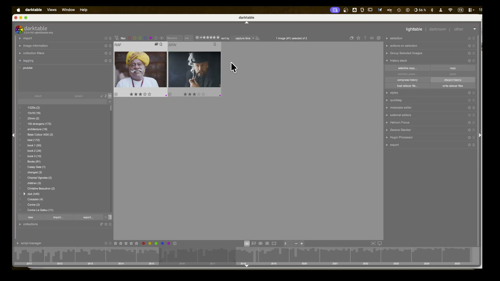
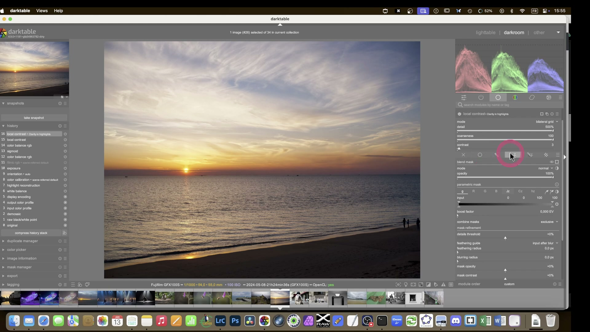
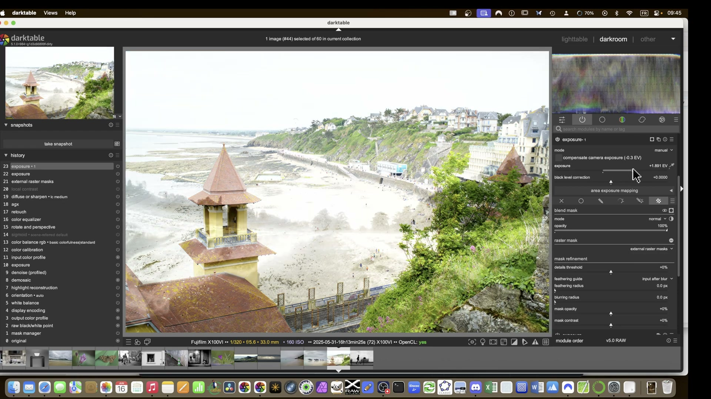
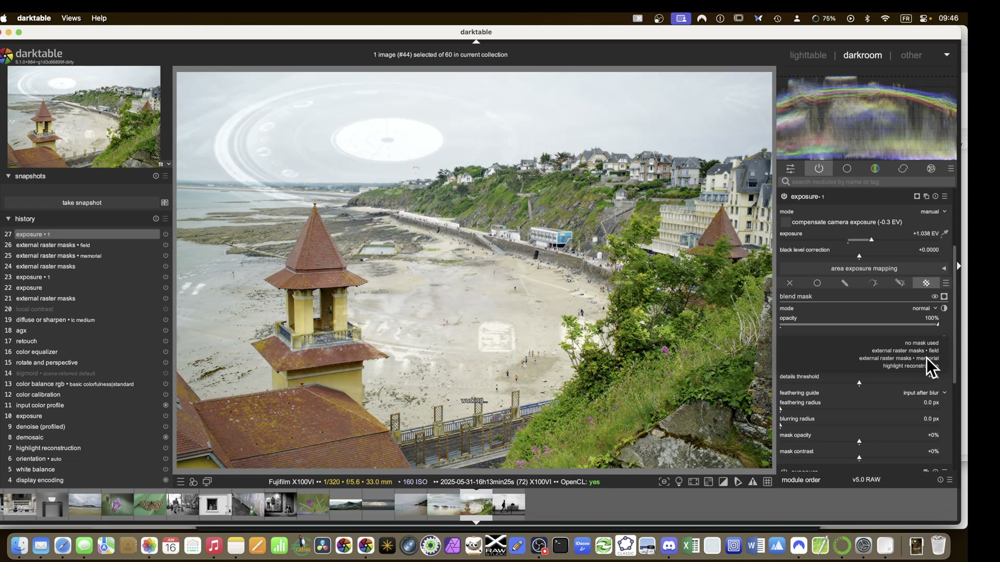
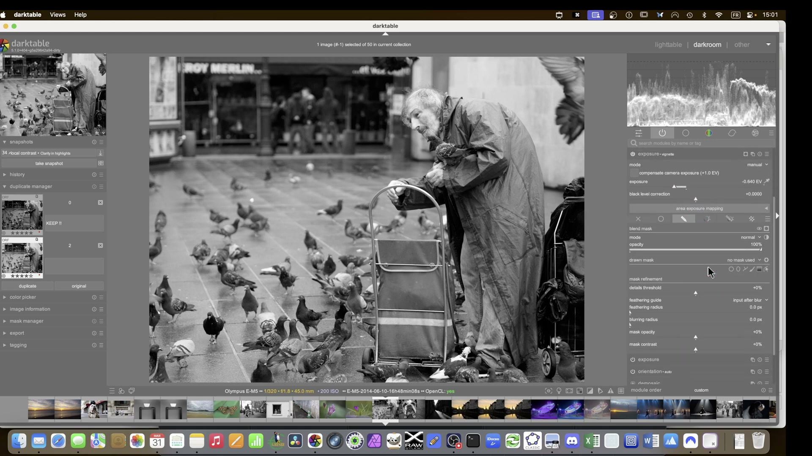
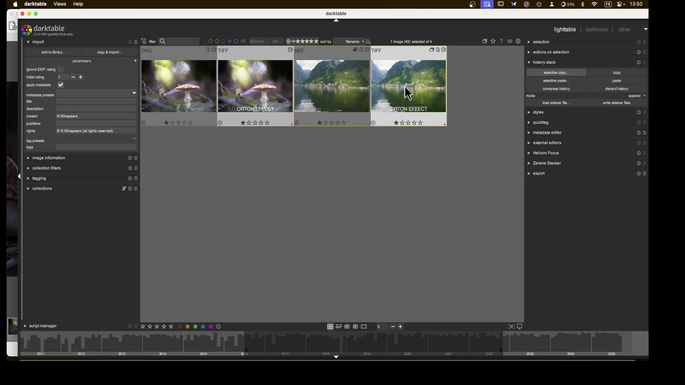

Ritratto -- Effetto Dragan e ritratto chiaroscuro¶
Fonti: The Dragan effect in darktable -- A Dabble in Photography | An Open Source Portrait (Mairi) -- Pat David
Due approcci al ritratto: l'effetto Dragan (alto contrasto, look drammatico) e il workflow chiaroscuro classico (toni pelle naturali, morbidezza controllata).
Parte A -- Effetto Dragan (ritratto ad alto contrasto)¶
Contesto¶
L'effetto Dragan -- dal fotografo Andrzej Dragan -- produce ritratti con contrasto estremo, texture della pelle enfatizzata e colori desaturati. In darktable si ottiene componendo l'immagine su se stessa con modalita' di fusione.
Passo 1 -- Correzioni preliminari¶
Partire dalle correzioni di base prima di qualsiasi effetto creativo:
Tone Curve (o AgX): | Parametro | Valore | |-----------|--------| | Black relative exposure | -10.00 EV | | Dynamic range scaling | +10.00% | | Contrast | 2.80 | | Toe power | 1.55 | | Shoulder power | 1.55 |
Lens Correction: | Parametro | Valore | |-----------|--------| | Distortion | 1.000 (auto) | | Vignetting | 1.000 (auto) | | TCA red | 1.000 (auto) | | TCA blue | 1.000 (auto) |
Correzioni ottiche prima delle maschere
Applicare Lens Correction prima di creare maschere: se la correzione modifica la geometria dell'immagine, le maschere si aggiornano automaticamente.
Passo 2 -- Creare il duplicato per il Composite¶
La tecnica Dragan si basa sulla composizione dell'immagine su se stessa:
- Duplicare l'immagine (Ctrl+D)
- Sul duplicato, applicare il modulo Composite
- Impostare l'immagine di base come sorgente
Composite: | Parametro | Valore | |-----------|--------| | Blend mode | Overlay oppure Hard Light | | Opacity | 100.00% (poi ridurre se troppo intenso) | | Mode | RGB (scene) |

Modalita' di fusione e clipping
Multiply clippa le alte luci -- preferire Overlay o Hard Light per l'effetto Dragan. Monitorare sempre l'istogramma dopo l'applicazione.
Passo 3 -- Sharpening selettivo¶
Per enfatizzare la texture senza creare artefatti:
Highpass: | Parametro | Valore | |-----------|--------| | Sharpness | ~52.57% | | Contrast boost | ~25.68% |
Oppure Diffuse or Sharpen: | Parametro | Valore | |-----------|--------| | Central radius | 0 px | | Radius span | 512 px | | 1st order speed | -20.00% | | 3rd order speed | -20.00% | | 2nd/4th order speed | +10.00% | | 1st/3rd order anisotropy | +200.00% | | Edge sensitivity | 1.86 | | Edge threshold | +0.25 |
De-haze come effetto drammatico
Il modulo Diffuse or Sharpen puo' essere usato per un effetto de-haze aggressivo: aumentare i valori fino a 15-20 per un contrasto drammatico. Attenzione: senza maschera produce artefatti scuri ai bordi.
Passo 4 -- Desaturazione selettiva dei toni pelle¶
Color Equalizer (tab Saturation): | Parametro | Valore | |-----------|--------| | Nodo su rossi/toni pelle | Ridurre saturazione localmente | | White level | +1.00 EV | | Hue analysis radius | 1.5 px | | Saturation threshold | 10.0% | | Use guided filter | True |

Maschera di fusione per controllare l'intensita'
Se la desaturazione e' troppo aggressiva, ridurre l'opacita' della maschera di fusione (es. 47%) invece di modificare i parametri del modulo.
Passo 5 -- Vignettatura creativa e contrasto finale¶
Vignettatura: applicata per attirare l'attenzione sul volto.
Contrast Equalizer (Luma): | Parametro | Valore | |-----------|--------| | Mix | +1.00 (poi ridurre a gusto) | | Luma contrast | Aumentare con cautela |

Contrasto locale: dosare con delicatezza
Il Contrast Equalizer puo' produrre effetti eccessivi se non dosato con estrema delicatezza. Iniziare con valori bassi e aumentare gradualmente.
Passo 6 -- Confronto con snapshot¶
Usare il sistema Snapshot per confrontare prima/dopo ad ogni passaggio chiave:
- Creare uno snapshot dopo le correzioni di base
- Creare un secondo snapshot dopo il Composite
- Creare un terzo snapshot dopo il color grading
- Usare il confronto laterale per valutare l'impatto di ogni passo

Parte B -- Ritratto chiaroscuro (workflow classico)¶
Basato su An Open Source Portrait (Mairi) di Pat David, adattato per darktable.
Passo 1 -- Esposizione¶
Nel workflow chiaroscuro, l'esposizione e' tutto. Spingere l'esposizione fino a quando un canale RGB sfiora il lato destro dell'istogramma:
| Parametro | Valore |
|---|---|
| Exposure Compensation | ~2.30 EV (variabile) |
| Black point | ~150 (controllare dettaglio ombre) |

Indicatori di clipping
Attivare gli indicatori di clipping per alte luci e ombre: le alte luci sul volto del soggetto sono priorita' assoluta da preservare.
Passo 2 -- Bilanciamento del bianco¶
Usare Spot WB su un'area che dovrebbe essere neutra:
- Una parete grigia sullo sfondo
- Un bordo bianco noto
- Un cartoncino grigio 18% scattato durante il set
| Parametro | Valore |
|---|---|
| Temperature | ~7300 K (dipende dalla fonte) |
| Tint | ~0.545 |

Passo 3 -- Riduzione rumore¶
Per ritratti a ISO elevati, bilanciare riduzione rumore e conservazione del dettaglio:
| Modulo | Parametro | Valore | Note |
|---|---|---|---|
| Denoise (profiled) | -- | Auto | Primo passo |
| Impulse NR | Threshold | 55-70 | Sale e pepe |
| Luminance NR | Amount | 6 | Non esagerare |
| Chrominance NR | Amount | 6 | Controllare l'iride |
Crominanza e dettaglio dell'iride
Spingere troppo la Chrominance NR fa perdere i colori bellissimi dell'iride. Controllare sempre a zoom 200% sull'occhio del soggetto.
Passo 4 -- Contrasto locale e Color Balance¶
Local Contrast: | Parametro | Valore | |-----------|--------| | Radius | 17 (per ritratti ravvicinati) | | Contrast | 0.5 | | Detail | 0.3 | | Sharpen | 0.0 |
Color Balance RGB: - Preset: standard oppure vibrant colors - Basic colourfulness: aumentare moderatamente - Desaturare leggermente i toni della pelle tramite Color Equalizer

Riepilogo impostazioni -- Effetto Dragan¶
| Modulo | Parametri chiave | Scopo |
|---|---|---|
| Tone Curve / AgX | Black -10 EV, Contrast 2.80 | Base tonale |
| Lens Correction | Auto (distortion, vignetting, TCA) | Correzioni ottiche |
| Composite | Blend mode: Overlay/Hard Light | Effetto Dragan |
| Highpass | Sharpness ~53%, Contrast boost ~26% | Nitidezza bordi |
| Diffuse or Sharpen | De-haze speeds, anisotropy +200% | Texture drammatica |
| Color Equalizer | Desaturazione toni pelle | Look desaturato |
| Contrast Equalizer | Mix +1.00, Luma contrast | Contrasto finale |
Riepilogo impostazioni -- Ritratto chiaroscuro¶
| Modulo | Parametri chiave | Scopo |
|---|---|---|
| Esposizione | Exposure ~2.30 EV, Black ~150 | Esposizione corretta |
| White Balance | Spot WB su area neutra | Colori naturali |
| Denoise | Profiled auto + Luminance/Chrominance 6 | Rumore controllato |
| Local Contrast | Radius 17, Contrast 0.5 | Profondita' |
| Color Balance RGB | Standard/vibrant, colourfulness | Colori ritratto |
| Color Equalizer | Desaturazione selettiva pelle | Toni pelle naturali |
Fonti¶
-
The Dragan effect in darktable -- A Dabble in Photography ↩
-
An Open Source Portrait (Mairi) -- Pat David | Copia locale:
processed/pixls-articles/articles-an-open-source-portrait-mairi.md↩